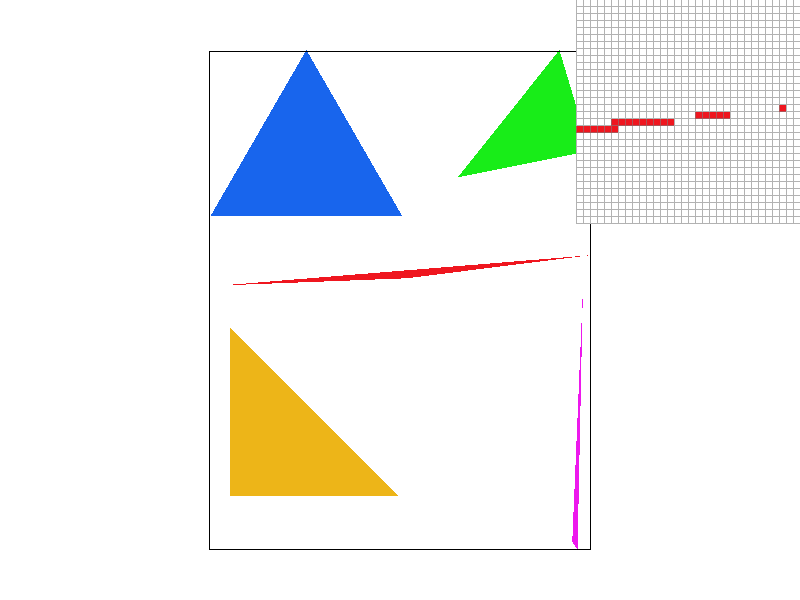
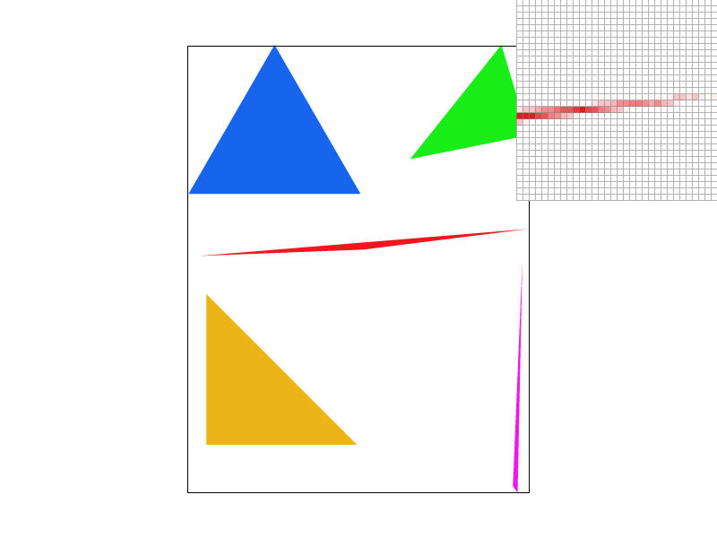
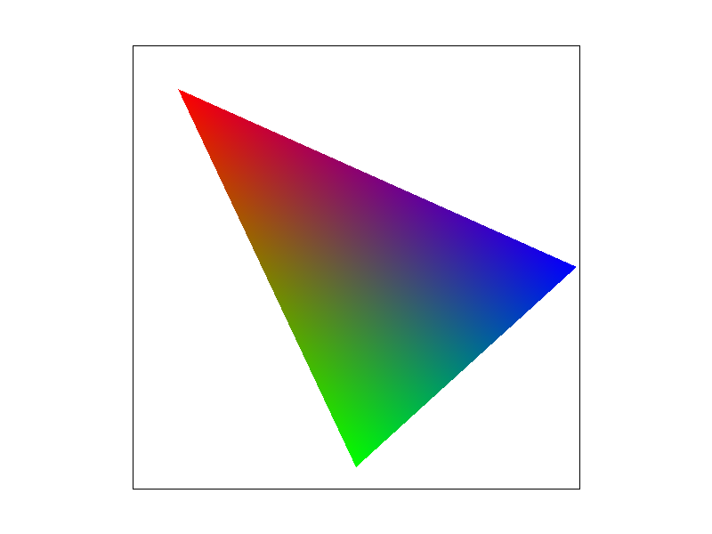
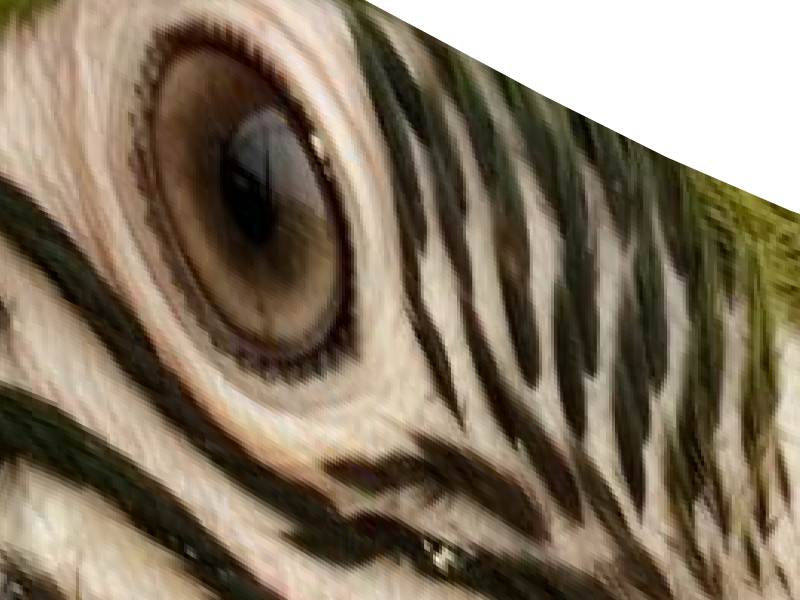
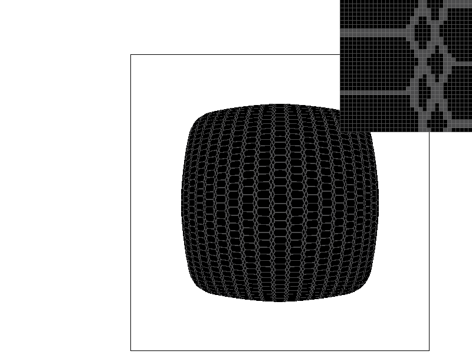
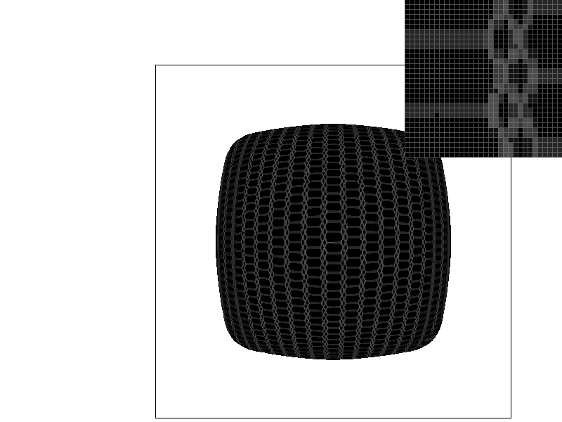
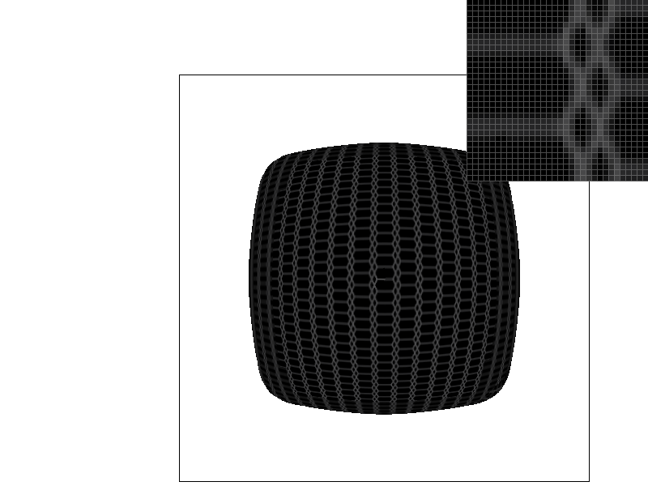

CS184/284A Spring 2025 Homework 1 Write-Up
Link to webpage
Link to GitHub repository

Overview
Through this homework, we implemented a simple 2D SVG rasterizer, with support for various antialiasing techniques including supersampling, bilinear filtering, and level sampling with mipmaps. Implementing each of these techniques, we were able to better understand the various tradeoffs associated with them. Supersampling, for instance, represents somewhat of a ground truth, but is costly in terms of speed and memory. Bilinear filtering on the other hand, is faster, and has no memory cost, but can result in a blurry image. Mip-mapping allows us to precompute filters, resulting in faster performance but at the cost of memory. Overall, these techniques can be used in concert to produce the most appealing final image.
Task 1: Drawing Single-Color Triangles
At a high level, to rasterize a triangle, you must determine which pixels on the screen fall inside the triangle, and which fall outside. Then, you can sample the color of the triangle at all the pixel positions that fall inside the triangle, and display those colors on the screen. Our implementation determines the bounding box of the triangle, and iterates through each pixel in the bounding box to determine if it falls inside the triangle. Since this rasterizer must only handle single colors, our implementation simplifies to determining if a pixel falls inside the triangle by performing a three line test, and outputting the color associated with the triangle.Our algorithm is no worse than one that checks each sample within the bounding box. We first compute the minimum x and y coordinates of the points of the triangle, and then compare these to the maximum width and heights in order to avoid having to check pixels outside the drawing area. Then, we iterate over each pixel in the bounding box, and check if that pixel is inside the triangle. This could be optimized using barycentric coordinates and tiled traversal to avoid having to perform calculations for every pixel in the bounding box, especially when up to half of the pixels are outside the triangle.
Task 2: Antialiasing by Supersampling
Our supersampling algorithm is only a slight modification from the normal rasterization algorithm. We iterate through each pixel in the bounding box of the triangle, and then depending on the sampling rate, we subdivide each pixel into subpixels. We iterate over each subpixel and sample the color, then store this in the sample_buffer object. After traversing the whole screen with this technique, the sample buffer contains a higher resolution version of the image we want to display to the screen. The function resolve_to_framebuffer() was modified to take the sample buffer, and downscale it to the screen resolution. This is done simply by averaging the colors of each subpixel in a pixel, and then sending that color to be displayed.Supersampling is useful because it allows us to remove aliasing effects like jaggies, Moire patterns, etc. This is because supersampling, in effect, removes frequencies in the image above the Nyquist frequency before we sample. This means that high frequency patterns that we can't represent as a limitation of resolution are filtered out. In our case, but sampling more than once for each pixel in the final image and averaging the result, we basically applied a 1 pixel box blur to the underlying image, and then sampled each pixel of the resulting image.
|

|
|

|
As seen in the above figures, the aliasing on the edge of the triangle is reduced by higher levels of supersampling. This occurs because the higher sampling rate means higher frequency signals are required to produce aliasing. This is best observed on the edge of a skinny triangle because it is a high frequency change in colors on the screen.
Task 3: Transforms
To the disappointment of robot rights advocates worldwide, we made the robot dab. We did this by applying a set of transforms to rotate its arms, head, and torso.
Task 4: Barycentric coordinates
Barycentric coordinates describe a point inside a triangle in relation to its distance from each side of the triangle. Geometrically, you can think of each coordinate as measuring the ratio of the distance from one side of the triangle to the sample point, and the distance from that side to its opposite vertex. This is very useful, as it allows us to interpolate values defined at vertices across the inside of the triangle. In the following example, each vertex has a color red, green, or blue, and the color of the triangle's interior interpolates between these three colors based on a pixel's barycentric coordinates.|

|

|
Task 5: "Pixel sampling" for texture mapping
Pixel sampling for texture mapping is basically converting the discrete per pixel information from the texture to a continuous function. Then, we can sample this continuous function at each pixel on the screen. Sometimes this will be at a frequency greater than the original image, resulting in magnification, or less, resulting in minification.
The conversion to a continuous function can be done in several ways. In this project, we implemented nearest sampling and bilinear sampling. Nearest sampling simply finds the nearest pixel to the sample location, and uses that as the output, while bilinear sampling performs a bilinear interpolation between the four nearest pixels.
For our implementation of nearest sampling, we simply compute the barycentric coordinates u, and v, and then round this to the nearest whole texel. Then, we sample the texture at this texel and return it to the rasterizer to output to the sample buffer.
For our implementation of bilinear sampling, we take the u-v coordinates of our sample point and find the four nearest texels to it. Then, we perform a bilinear interpolation between the colors of each texel, resulting in a single color we can send to the sample buffer.
To visualize bilinear interpolation, you can picture a square formed by the centers of each of the four texels. The interpolation occurs as two lerps across one axis, and then a final lerp between these two points. This results in a smoother output both when the texture is minified, as we will have filtered before sampling, and when the texture is magnified, as we can smoothly transition between texel colors from the original image.
|
|

|
|
|
|
Above, you can see that in the case of a magnified texture, even with 16x supersampling, nearest pixel texture sampling isn't sufficient, and results in a blocky/pixelated look. Bilinear sampling, on the other hand, smooths out the lack of information via interpolation, resulting in a smoother, albeit slightly blurrier image. Large differences between the two methods will occur whenever the sampling frequency of the screen is greatly mismatched with the sampling frequency of the texture. When the texture is greatly minified, nearest sampling will result in aliasing effects, while bilinear sampling will act similar to supersampling.
Task 6: "Level Sampling" with mipmaps for texture mapping
Level sampling is a technique that allows for prefiltering textures at different levels of detail, which can then be used when the texture is highly minified. This helps reduce aliasing while retaining detail up close. In a detailed scene with textures at very different scales, some will match the screen resolution, while others will be minified. By computing mipmaps, we can sample the correctly filtered texture for the magnification/minifcation of the texel.
For our implementation of mipmapping, we compute the barycentric coordinates described in the previous task, and also the uv coordinates of neighboring pixel positions in order to determine the difference vectors and apply the correct mipmap level. We calculate these difference vectors in get_level() by computing the difference between uv coordinates and scaling them based on the dimensions of the whole mipmap. Then, we calculate the level using the formula provided in lecture:
\[ L = \text{max}\left(\sqrt{\left(\frac{du}{dx}\right)^2+\left(\frac{dv}{dx}\right)^2}, \sqrt{\left(\frac{du}{dy}\right)^2+\left(\frac{dv}{dy}\right)^2}\right) \] \[ D = log_2L \]If using nearest level, we simply round the level and sample the texture there. For linear, we sample the texture at the two nearest mipmap levels, and linear interpolate between the colors we sampled. This results in a continuous mix between mipmap levels as the minification increases.
Comparing pixel sampling, level sampling, and super sampling
As mentioned in the overview, each technique helps reduce either aliasing or magnification effects, but come with different performance tradeoffs. Supersampling is the most costly, resulting in a quadratic slowdown since the number of sampling operations increases with the square of the sampling rate. It also has a significant memory cost, as you must store many more pixels in the sample buffer before displaying them. However, this technique produces the best results in terms of antialiasing.
Pixel sampling is used for textures displayed at a different resolution than they possess. When magnified, a texture can be blocky if you simply sample at the nearest texel to the pixel location, but using bilinear sampling, we can, at the cost of some speed (as a result of sampling four texels instead of one) and no memory, we can reduce the blockiness that occurs under high magnification. This can make textures look more natural and smooth, but also can result in some blurring.
Mipmapping is useful when a texture spans a wide range of magnification and minification. While bilinear sampling reduces aliasing artifacts from minification somewhat, since it still only sample four texels, at extreme levels of minification, it could be skipping over a lot of information, resulting in details being lost. By computing different mipmap levels for varying levels of minification, we can filter out high frequency signals when the texture is very small, while maintaining crisp textures when under less minification. Mipmapping has a small memory cost, as we have to store each mipmap level. This works out to only a 33% increase in memory usage, however, so it's worth the tradeoff.
|

|
|
|

|

|